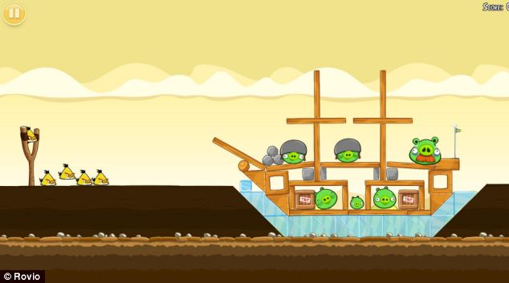
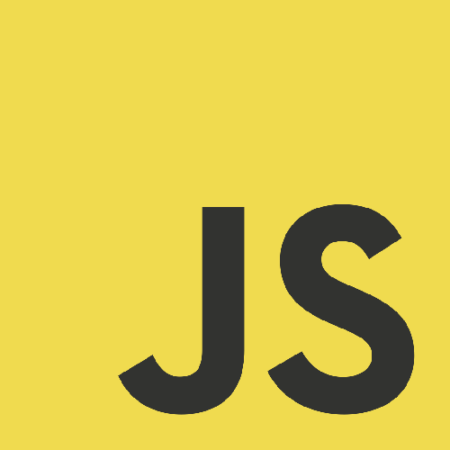

Programmation Orientée Objet
Aymeric LAMBOLEY
Programmation Orientée Objet
Exemples en se basant sur le développement de jeux
JavaScript
Historique
- Créé par Brendan Eich en 1995.
- Petit langage de script, rien à voir avec Java.
- Ajax en 2005.
- Pas de Flash sur iPhone. HTML5 first Draft 2008.
- ECMAScript 5 en 2009.
- Node.js en 2009.
- WebGL sur tous les navigateurs en 2013.
- asm.js en 2013.
- WebAssembly annoncé en 2015.
- ECMAScript 6 Juin 2015.
Problématiques
- Langage interprété
- Pas de typage
- Langage orienté objet à prototype
- Le positionnement des fonctions a un ordre
- this dépend du contexte d'exécution !
- Les navigateurs ne supportent pas tous la dernière version d'ECMAScript
Alternatives
State of JS
TypeScript
Historique et but
- Développé par Microsoft en 2012, libre et open source.
- Cocréé par Anders Hejlsberg, principal inventeur de C#.
- Basé sur les standards d'ECMAScript.
- Permet le développement d'applications à grande échelle.
- Langage typé.
- Compilé en JavaScript.
- Tout code JavaScript existant peut-être appelé en TypeScript.
- Tout code TypeScript peut-être utiliser (après compilation) en JavaScript.
- Démarrage avec des fichiers de définitions externes.
- L'éco-système JS migre progressivement vers TS : Angular, Vue, Pixi.js, Babylons.js...
Déclaration de variables
//types primitifs :
let nom:string = "Aymeric";
let isMale:boolean = true;
let i:number = -0.32;
let tab:any[] = [7, "test", nom];
let obj:object = {x:15, y:-3.5};
const PI:number = 3.14;
//output
console.log(nom, isMale);vous avez déjà manipulé des objets...
tout est objet (avec un type)...
La POO
Opposition à la programmation procédurale
Un petit jeu vidéo atteint plusieurs milliers de ligne de code.
Comment séparer les tâches ? Comment s'organiser ?
Comment réutiliser proprement son code ?
Comment travailler à plusieurs ?
Qu'est ce qu'un objet ?
Un ensemble de propriétés et de méthodes
//instanciation
let bird:Bird = new Bird();
//propriétés
bird.color = 0xFF0000;
bird.friction = 0.12;
//méthodes
bird.fly();
bird.launch(12, -5);Mot clef new
À quoi sert un objet ?
Réutiliser son code
let redBird:Bird = new Bird();
redBird.color = 0xFF0000;
let blueBird:Bird = new Bird();
blueBird.color = 0x0000FF;
redBird.friction = 0.12;
blueBird.friction = 0.18;Réutiliser son code
function onTouch(evt:Event):void
{
blueBird.destroy();
for (let i = 0; i < 3; ++i)
{
let smallBlueBird:Bird = new Bird();
}
}Les fonctions
function somme(a:number, b:number):number
{
return a + b;
}
function positionner(posX:number, posY:number = 0):void
{
monObjet.x = posX;
monObjet.y = posY;
}Appellées aussi méthodes
La récursivité
Problème des Tours d'Hanoï
function factorialCalculation(factorial:number):number
{
if (factorial == 1)
return 1;
else
return factorial * factorialCalculation(factorial - 1);
}
function factorialCalculation2(factorial:number):number
{
let result = 1;
for (let i = 1; i <= factorial; ++i)
result *= i;
return result;
}Un objet est défini par une classe
export class Bird
{
constructor()
{
}
}- nom
- constructeur
- propriétés
- méthodes
Constructeur
Le constructeur est la méthode qui est appelée pour créer l'objet.
export class Bird
{
constructor()
{
}
}Un constructeur ne peut retourner aucun type !
Destructeur
Fonction appelée par le Garbage Collector avant que sa mémoire ne soit rendue.
Cette fonction n'existe pas en TypeScript / JavaScript (on la codera nous-même), mais le garbage collector existe bien !
Il libère la mémoire des objets qui ne sont plus utilisés en passant à intervale indéterminé.
Un objet
export class Bird
{
public life:number = 2;
constructor() {
let velocityX:number = 0;
}
public hurt():void {
--life;
if (life <= -1)
console.log("dead");
}
}